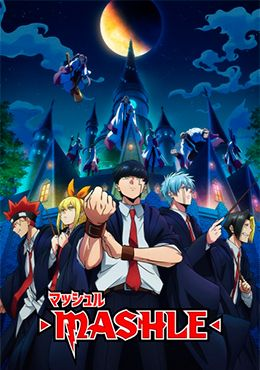
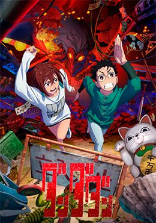
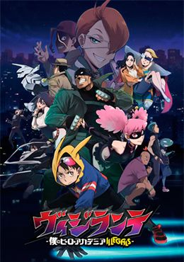
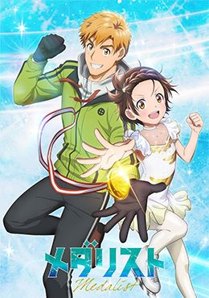
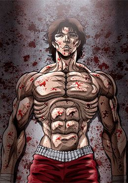
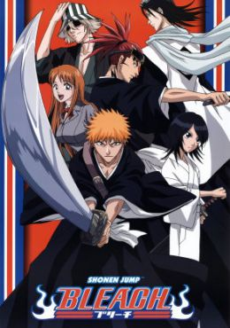

Todo cambia cuando Yuji se encuentra con una reliquia maldita: un dedo momificado de Ryomen Sukuna, el "Rey de las Maldiciones", un poderoso espíritu maligno de la era Heian. Cuando sus amigos del club de ocultismo son atacados por maldiciones atraídas por el dedo, Yuji lo consume para obtener poder y salvarlos. Al hacerlo, se convierte en el anfitrión de Sukuna, uno de los seres más peligrosos de la historia. Esto le gana una sentencia de muerte inmediata por parte de los hechiceros jujutsu, pero el hechicero Satoru Gojo ve potencial en él y le ofrece una alternativa: posponer su ejecución hasta que pueda consumir los 20 dedos de Sukuna y luego morir para eliminar al Rey de las Maldiciones para siempre. Yuji ingresa a la Escuela Técnica de Hechicería de Tokio, donde aprende a controlar energía maldita, pelea contra espíritus malignos y se une a otros estudiantes hechiceros. Juntos enfrentan maldiciones cada vez más poderosas mientras Yuji lucha por darle un sentido a su muerte, proteger a quienes ama y mantener a Sukuna bajo control.
La maga Frieren formaba parte del grupo del héroe Himmel, quienes derrotaron al Rey Demonio tras un viaje de 10 años y devolvieron la paz al reino. Frieren es una elfa de más de mil años de vida, así que al despedirse de Himmel y sus compañeros promete que regresará para verlos y parte de viaje sola. Al cabo de cincuenta años, Frieren cumple su promesa y acude a visitar a Himmel y al resto. Aunque ella no ha cambiado, Himmel y los demás han envejecido y están en el final de sus vidas. Cuando Himmel muere, Frieren se arrepiente de no haber pasado más tiempo a su lado conociéndolo, así que emprende un viaje para conocer mejor a sus antiguos compañeros, a las personas y descubrir más del mundo.
“Gabimaru el Hueco”, un ninja de la Aldea Iwagakure conocido por su fría actitud, se encuentra ahora en el corredor de la muerte. Cansado de la muerte y la traición, busca morir. No obstante, ningún método de ejecución parece funcionar en él debido a que Gabimaru, aunque no lo admite, aún tiene una razón para vivir. Él quiere volver a su hogar y ver a su esposa, la razón de su felicidad y por la que su trabajo como asesino comenzó a estorbarle. Por lo tanto, se niega a morir. Asaemon la ejecutora, una famosa asesina de criminales, nota esto y le da una propuesta al ninja. Ella quiere que Gabimaru se una a una expedición a una isla al sur de Japón en la búsqueda del elixir de la vida, y a cambio le perdonará todos sus crímenes. No obstante, esta isla no es un lugar normal: se cree que es el paraíso.
Tokio se encuentra bajo un extraño fenómeno: ¡la gente entra, sin remedio, en combustión espontánea! Aunque, afortunadamente, hay un equipo a cargo de mantener a raya este particular infierno… ¡Fire Force! Que, además, ahora cuenta con un nuevo miembro: Shinra, un adolescente de sonrisa perturbadora, poder curioso y cuyo objetivo es convertirse en un héroe.
La chica de 16 años, Ai Hoshino, es una talentosa y hermosa idol que es adorada por sus fanáticos. Ella es la personificación de la pureza, pero no todo lo que brilla es oro… Gorou Honda es un ginecólogo de una zona rural y gran fanático de Ai. Entonces, cuando la idol embarazada se presenta en su hospital, está más que desconcertado. Gorou le promete un parto seguro, pero poco sabe él que un encuentro con una misteriosa figura resultaría en su muerte prematura, o eso pensaba. Al abrir sus ojos, Gorou se encuentra en el regazo de su amada idol y descubre que ha renacido como Aquamarine Hoshino, ¡el hijo recién nacido de Ai! Con su mundo vuelto al revés, Gorou pronto descubre que el mundo del espectáculo está lleno de espinas, y que el talento no siempre genera éxito. ¿Podrá proteger la sonrisa de su amada idol?
Saichi Sugimoto es un duro soldado que participa en la guerra ruso-japonesa y que se ganó el apodo de "Sugimoto el Inmortal". Los honores en combate de poco le sirven cuando es expulsado del ejército por cierto incidente, pero tiene un objetivo que cumplir, una promesa que mantener, y para ello necesitará dinero. Su primera idea para conseguirlo será unirse a la reciente fiebre del oro de Hokkaido y probar suerte, pero el destino le preparaba un reto más interesante y a la par, más rentable.
En el planeta Tierra de Nadie, los reporteros Meryl Stryfe y Roberto De Niro recorren el desierto en busca del infame forajido Vash la Estampida. Pero el hombre que encuentran cerca del desolado pueblo de Jeneora Rock dista mucho del terrorista letal que esperan. En realidad, Vash es un vagabundo pasivo y despreocupado; un defensor de la paz, muy querido por los habitantes del pueblo. Su inexacta reputación se debe, en realidad, a las atrocidades generalizadas cometidas por su hermano gemelo, Millions Knives. Aun así, a Vash se le conoce como "El Tifón Humanoide" debido a su tendencia a sembrar el caos violento. El caos pronto llega en forma de cazarrecompensas que buscan el alto precio por la cabeza de Vash, y su violenta persecución representa un gran peligro para la ciudad y su preciada central eléctrica. Gracias a su destreza como pistolero, Vash es capaz de resistir a la mayoría de estas fuerzas nefastas. Sin embargo, pronto deberá enfrentarse al mal supremo: el imparable poder destructivo de su malvado hermano.

Koichi Haimawari es un estudiante aburrido que aspiraba a ser un héroe pero abandonó su sueño. Aunque el 80% de la población mundial tenga poderes sobrehumanos llamados Dones, pocos son elegidos para convertirse en héroes y proteger a las personas. ¡Todo cambia para Koichi cuando él y Pop☆Step son salvados por el vigilante Knuckleduster y son reclutados para convertirse en vigilantes!
Una nueva Guerra del Santo Grial se prepara en un pequeño y nuevo país pese a la oposición de los magos, pero es una Guerra del Santo Grial falsa, artificial, cuyo objetivo escapa a los miembros de la Torre del Reloj.
"Hero" es el peor castigo del mundo. Aquellos condenados por crímenes atroces son sentenciados a convertirse en "Héroes" y obligados a ingresar al servicio militar obligatorio en la guerra contra los Señores Demonios. A estos convictos ni siquiera se les permite morir: si son asesinados, serán resucitados para luchar otro día. El héroe Xylo Forbartz, exjefe de la Orden de los Caballeros Santos, lidera una unidad penal de deplorables que combate en las líneas del frente. Es en estas circunstancias extremas donde conoce a Teoritta, una de las armas más poderosas del mundo. "Cuando cada último enemigo haya sido derrotado, debes cubrirme de alabanzas y acariciarme la cabeza." Para sobrevivir y vengarse de aquellos que le hicieron daño, hace un pacto con la diosa y se lanza de lleno a un torbellino de guerra e intriga.
La Alianza por la Liberación Animal, una organización ecoterrorista, rescata a una chimpancé embarazada de un laboratorio de pruebas con animales, ¡solo para que dé a luz a un "humanzé" mitad humano, mitad chimpancé llamado Charlie! Quince años después, los padres adoptivos humanos de Charlie están finalmente listos para enviarlo a una escuela secundaria normal, donde hace su primer amigo: una niña humana llamada Lucy. Sin embargo, mientras tanto, la postura de la ALA se ha vuelto cada vez más extrema, y ahora están aquí para arrastrar a Charlie a su complot terrorista...
Cuando Arisu Yamabuki estaba solo en la cama por la noche, encontraba consuelo en la voz de una locutora de radio que se hacía llamar "Apollo". Sin embargo, un día, ella dejó de transmitir sin ninguna explicación. Pasaron los años y Arisu ahora es un estudiante de segundo año de secundaria. Se propone la misión de buscar a Apollo, ya que hay algo que desea decirle. No sabe cómo es ella, ni siquiera cuál es su verdadero nombre, pero logra obtener algunas pistas sobre ella en el club de radiodifusión de su escuela. Allí conoce a cuatro chicas que sueñan con conseguir un trabajo donde puedan hacer pleno uso de sus voces. ¿Quién es Apollo y cómo se desarrollarán los sueños de esas cuatro chicas?

Convertirse en bailarín sobre hielo no era el objetivo de Tsukasa Akeuraji cuando decidió lanzarse al mundo del patinaje artístico. Sin embargo, fue allí donde acabó, ya que “empezó demasiado tarde” para perseguir sus verdaderos sueños de patinador en solitario. Durante años, se contentó con ser una cáscara de sus antiguas ambiciones, hasta que conoció a una niña en la que se vio reflejado. Inori Yuitsuka, una niña de quinto curso tan desesperada por patinar que practicaba en secreto, había visitado la pista de Tsukasa con su madre para pedir clases. Todos los que la rodeaban la tacharon de inútil, le dijeron que era “demasiado tarde” para empezar y que era imposible alcanzar a las demás patinadoras. Con una nueva convicción y sin querer dejar que otra patinadora apasionada siga el mismo camino que él, Tsukasa asume la responsabilidad de entrenarla y promete convertir a Inori en medall

El protagonista, Baki Hanma, entrena enfocado en superar a su padre, Yujiro Hanma, el luchador más fuerte del mundo. Cinco de los presos más violentos y brutales, se reúnen para enfrentar a Baki. Su objetivo es probar la derrota. Su fuerza y habilidad inigualable, los han llevado a aburrirse de la vida misma, y ahora buscan a Baki con la esperanza de que pueda abrumarlos y aplastarlos por completo. En esta crisis, otros guerreros de artes marciales subterráneos se reúnen para luchar al lado de Baki: Kaoru Hanayama, Gouki Shibukawa, Retsu Kaioh y Doppo Orochi. ¡Inicia un enfrentamiento épico entre los condenados a muerte y Baki y sus amigos
Ozora Tsubasa, también conocido en España como Oliver Atom, es un chico que considera que el balón es su mejor amigo. Apasionado del fútbol desde su más tierna infancia, llegará al equipo de Nankatsu para convertirse en todo un as del balón.
Pasados dos años y medio de entrenamiento con Jiraiya, Naruto Uzumaki regresa a la aldea oculta de la hoja, donde se reúne con sus viejos amigos y conforma de nuevo el Equipo 7. Debido a la ausencia de Sasuke, aparece un nuevo personaje llamado Sai el cual retoma su lugar. En esta secuela podremos notar como los compañeros de Naruto han madurado con respecto a su desempeño previo, mejorando la mayoría de estos en su nivel. Durante su entrenamiento con Jiraiya, Naruto aprendió a controlar un poco de la chacra del Kyubi. Lo contrario a la serie original, dónde sólo desempeñó un papel secundario, la organización Akatsuki asume el papel antagónico principal en Naruto Shippuden, buscando como objetivo principal el capturar a todos los poderosos monstruos Biju.
La trama se produce en un instituto dirigido a la fuerza por la presidenta del consejo de estudiantes Satsuki Kiryuuin. Todo cambiará cuando Ryuuko Matoi, una estudiante de transferencia que empuña una gran espada con forma de tijera “Basami”, comience a provocar un levantamiento en el campus.
Según cuentan los libros de historia, el 13 de Septiembre del 2000, un enorme meteorito chocó contra la Antártida, causando el derretimiento del Polo Sur y la consecuente inundación y destrucción de todas las ciudades costeras. A este evento crucial se lo denomino Segundo Impacto -El primero fue el que destruyó a los dinosaurios-. La Tierra atravesó luego de ello un estado de crisis y catástrofes naturales y más de mitad de la población humana murió. Han pasado 15 años desde el Segundo Impacto cuando Tokyo-3, es atacada por un misterioso ser orgánico gigante, sin embargo esto no parece ser una sorpresa para un selecto grupo de gente de una organización de la ONU llamada NERV. Ellos se refieren al enemigo como "Tercer Ángel" y han desarrollado unos enigmáticos robots gigantes llamados EVA con una particularidad, solo pueden ser piloteados por jóvenes de 14 años con caracteristicas no del todo claras.

Kurosaki Ichigo es un estudiante de instituto de 15 años, que tiene una peculiaridad: es capaz de ver, oír y hablar con fantasmas. Pero no sabe hasta dónde puede abarcar la clasificación de espíritus, ni lo que conlleva el saberlo. Un buen día, una extraña chica de pequeña estatura que viste ropas negras de samurai entra en su cuarto. Se llama Rukia Kuchiki, y es una Shinigami (Dios de la Muerte). Ante la incredulidad de Ichigo, le explica que su trabajo es mandar a las almas buenas o plus a un lugar llamado la Sociedad de Almas, y eliminar a las almas malignas o hollows. Luego junto a Inoue Orihime, Ishida Ury y Sado Yasutora se veran envueltos en diferentes batallas, las cuales iran desarrollando sus diferentes habilidades que le otorgaran a cada uno su importancia en la serie.
La historia tiene lugar en Koudo Ikusei, la escuela de prestigio por excelencia que cuenta con instalaciones de última generación en las que casi el 100% de los alumnos pueden ir a la universidad y encontrar trabajo. En ella los estudiantes tienen la libertad de llevar el peinado que quieran y de traer todos los efectos personales que deseen. Koudo Ikusei es una escuela paradisíaca, pero lo cierto es que sólo los alumnos “superiores” son bien tratados. El protagonista Kiyotaka Ayanokouji pertenece a la Clase-D, aquella en la sólo están los estudiantes “inferiores” que son ridiculizados por el resto de la escuela. Por alguna razón, Kiyotaka se despistó en sus exámenes de ingreso y terminó ahí. Sin embargo, después de conocer a Suzune Horikita y Kikyou Kushida, otros dos estudiantes de su misma clase, la situación de Kiyotaka comienza a
¿Cuándo fue la última vez que jugué un juego que no fuera una basura?" Este es un mundo en el futuro cercano donde los juegos que usan pantallas se consideran retro, y muchos juegos de realidad virtual no llegan a un mínimo de calidad: son los llamados "juegos basura". A aquellos que dedican sus vidas a completar estos juegos se les llama "cazadores de juegos basura", y Rakuro Hizutome es uno de ellos. El juego que ha elegido abordar a continuación es Shangri-La Frontier, un juego que goza de una gran crítica y más de 30 millones de jugadores. ¡La mejor historia de aventuras escrita por el jugador más fuerte de "juegos basura" está a punto de comenzar!
Tras una desastrosa derrota en la Copa Mundial de 2018, el equipo japonés está pasando por un mal momento. ¿Qué es lo que les falta? Un delantero que sea el mejor, alguien que pueda guiarles hasta la victoria. La federación japonesa está decidida a crear un jugador con una sed de gol única, alguien "egoísta" con el balón, un jugador que pueda ser capaz de dar la vuelta a un partido que está por perderse... Y para ello reúnen a 300 de las mejores jóvenes promesas de Japón. ¿Quién resultará el elegido como futuro líder del equipo? ¿Quién será capaz de plantar cara con su fuerza y su ego a cualquiera que se ponga en su camino? ¿Quién erá ese jugador más egoísta que nadie?
Asesinado mientras salvaba unos estudiantes que serían atropellados por un camión, un NEET de 34 años reencarna en un nuevo mundo de magia bajo el nombre de Rudeus Greyrat, un recién nacido. Con conocimiento, experiencia y arrepentimientos de una vida pasada, Rudeus jura llevar una vida plena y no volver a repetir sus errores. Ahora, dotado con un tremendo poder mágico, así como la mentalidad de un hombre adulto, Rudeus es visto como un genio en potencia por sus nuevos padres. Pronto, se verá siendo entrenado por poderosos guerreros, como su padre, un espadachín y una maga llamada Roxy Migurdia. Pero a pesar de su inocente exterior, Rudeus sigue siendo un otaku pervertido, y usa sus vastos conocimientos para hacer suyas a las mujeres que en su vida anterior nunca disfrutó.